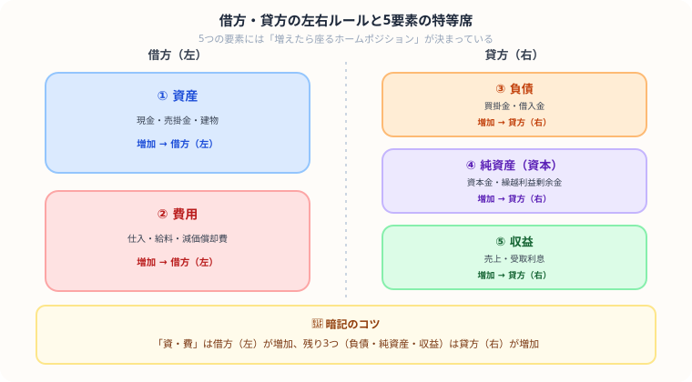
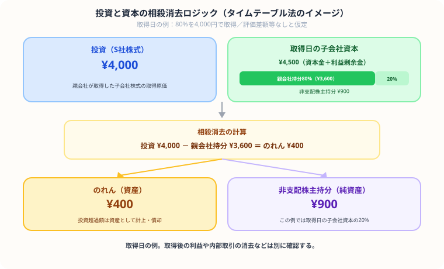

日商簿記3級・2級の独学勉強法と合格スケジュール【2026年版】
日商簿記検定は、企業の取引を記録・計算し、決算書の作成につなげる技能を学ぶ検定です。私自身、会計士試験に約1年半挑戦するなかで簿記2級の知識をベースに積み上げてきました。この記事は私の受験経験と、実際に使ったテキスト・スケジュールをもとにまとめた勉強法です。
2027年3月31日までの2026年度試験には2022年度版の区分表を適用します。2027年4月1日からの区分表は2026年7月31日に確定版が公表され、統一・団体・ネット試験に適用されます。
- 紙の手形・小切手に関する項目を削除。
- 販売のつど売上原価へ振り替える方法、有形固定資産の除却・廃棄、定率法の簡易な内容を2級から3級へ移行。
- 2級のリースは引き続き借手側が対象。使用権資産・リース負債を用い、短期・少額リースも範囲に明示。貸手側にはファイナンス／オペレーティングの区分が残るため、「区分がすべてなくなる」とはしません。
出典：日本商工会議所「出題区分表」／日本商工会議所「2027年度改定説明書・確定版」（2026年10月31日確認）
簿記試験の基本情報
| 項目 | 3級 | 2級 |
|---|---|---|
| 2026年度の統一試験 | 6月14日・11月15日・翌2月28日 | 同日 |
| 試験時間 | 60分 | 90分 |
| 合格基準 | 100点満点の70%以上 | 100点満点の70%以上 |
| 第173回統一試験（2026年6月14日） | 実受験14,359人／合格4,854人、33.8% | 実受験4,821人／合格728人、15.1% |
| 2025年度ネット試験（2025年4月〜2026年3月） | 受験276,477人／合格112,797人、40.8% | 受験141,072人／合格46,351人、32.9% |
出典：日本商工会議所「2級 試験科目・注意事項」／日本商工会議所「3級 試験科目・注意事項」／日本商工会議所「2級統一試験データ」／日本商工会議所「3級統一試験データ」／日本商工会議所「ネット試験データ」／日本商工会議所「2026年度カレンダー」（2026年10月31日確認）
合格率の分母・対象期間・受験方式は表のとおりです。受験者や受験機会が異なるため、この差だけでネット試験が易しいとは判断できません。必要勉強時間の一律の換算は、確認した公式資料では裏付けを得られませんでした。
出典：日本商工会議所「2・3級ネット試験Q&A」／日本商工会議所「ネット試験について」（2026年10月31日確認）
簿記3級の勉強法
使える時間と課題から学習期間を決める
現在の3級は、比較的小規模の株式会社を想定した基本的な商業簿記を扱います。個人商店だけを前提にした旧説明を訂正しました。仕訳・帳簿・決算整理を順に確認しましょう。
私が実際にやった3ステップ
- テキストで全体像を把握（2〜3週間）：「みんなが欲しかった！簿記の教科書」を1周読みました。最初は完璧に理解しようとせず、まず全体の流れを掴む読み方がよかったです。
- 問題集で仕訳を反復（2〜3週間）：仕訳問題を毎日20〜30問解きました。仕訳は簿記の根幹で、ここの精度が合否を分けます。手が自動で動くくらい反復するのがコツだと感じました。
- 過去問・模擬試験で形式慣れ（1〜2週間）：本番の時間配分を意識しながら、過去問を制限時間内に解く練習をしました。ネット試験の場合は模擬試験ソフトも活用しました。
頻出論点と注意点
簿記2級の勉強法
商業簿記と工業簿記の課題を分ける
簿記2級は3級の内容に加え、工業簿記（原価計算）が加わります。難易度が大幅に上がるため、3級合格直後でも気を抜かずに取り組む必要があります。
商業簿記の攻略
3級の応用として、株式会社会計・連結会計・税効果会計などが加わります。特に連結会計は複数の処理を関連づける論点です。仕訳の流れを図解で理解してから演習を積むことが定着の近道です。
工業簿記の攻略（2級のカギ）
工業簿記はCPA受験勉強でも管理会計として扱う分野で、私にとっても最初は体系が全然違って戸惑いました。原価計算・原価差異分析・CVP分析などが主要テーマです。最初はテキストをじっくり1冊読み込んでから演習に移ると理解が深まりやすかったです。工業簿記も誤答した計算過程を確認し、理解と解答時間を点検しましょう。
2級の学習スケジュール例
以下は編集部の5ヶ月プラン例で、合格に必要な期間を調査した値ではありません。理解度と生活の予定に合わせて変更してください。
| 期間 | 内容 | 目標 |
|---|---|---|
| 1ヶ月目 | 商業簿記テキスト精読 | 仕訳・帳簿の理解 |
| 2ヶ月目 | 工業簿記テキスト精読 | 原価計算の基礎固め |
| 3ヶ月目 | 問題集（商業・工業） | 頻出論点の反復演習 |
| 4ヶ月目 | 過去問・模擬試験 | 時間内完答の練習 |
| 5ヶ月目 | 弱点補強・直前対策 | 70点以上を安定させる |
おすすめテキスト・教材
3級向け（私が実際に使ったもの・調べたもの）
※ 以下の教材リンクにはAmazonアソシエイトリンクを含みます。
→私の本音：フルカラーで図解がとにかく豊富。視覚的にサクッと理解したい独学者に最高です。
→私の本音：ストーリー形式で読みやすさ抜群。問題集と一体型なのでカバンが重くならず、移動中の勉強にも最適です。
2級向け
- みんなが欲しかった！簿記の教科書2級（TAC出版）：商業簿記・工業簿記それぞれ1冊ずつ。3級からの流れでそのままこのシリーズを使い続けると統一感があります。
→私の本音：3級と同じシリーズなので迷わず選べるのが地味に助かります。工業簿記側は図解が多く「別ゲーム」への切り替えがスムーズでした。 - 合格トレーニング日商簿記2級（TAC出版）：演習量を増やしたい時期に使うと効果的です。教科書を一通り終えた後の問題演習に向いています。
→私の本音：問題数がとにかく多いので、手が勝手に動くレベルまで反復したい人向け。1冊やり切ると本番の初見問題への耐性がかなりつきます。
仕訳の覚え方：借方・貸方を感覚で掴む

簿記学習で最初につまずくのが「借方（左）と貸方（右）の使い分け」です。次のルールを体に覚えさせることが最重要です。
| 勘定の種類 | 増えたとき | 減ったとき | 例 |
|---|---|---|---|
| 資産 | 借方（左） | 貸方（右） | 現金・売掛金・建物 |
| 負債 | 貸方（右） | 借方（左） | 買掛金・借入金 |
| 純資産（資本） | 貸方（右） | 借方（左） | 資本金・繰越利益剰余金 |
| 収益 | 貸方（右） | 借方（左） | 売上・受取利息 |
| 費用 | 借方（左） | 貸方（右） | 仕入・給料・減価償却費 |
2級・連結会計の確認ポイント

図は取得日の例で、評価差額などを考えず子会社資本を4,500円、取得割合80%、取得原価4,000円と仮定しています。親会社持分3,600円、のれん400円、非支配株主持分900円という計算です。取得後の利益や内部取引は別に確認します。
| 論点 | 内容 | 難易度 |
|---|---|---|
| 投資と資本の相殺消去 | 親会社の投資と子会社の資本を相殺する基本処理 | ★★☆ |
| のれんの処理 | 投資が対応する子会社資本を上回る差額はのれん。逆の場合は負ののれんの扱いを確認 | ★★☆ |
| 内部取引・未実現利益の消去 | 親子間の取引を消去し、利益を調整 | ★★★ |
| 非支配株主持分 | 子会社の純資産のうち親会社以外の持分を計上 | ★★★ |
学習案として、取得日と取得後をタイムテーブルに分け、どの時点の資本・利益を使ったかを記録します。図の一例だけで連結会計すべてに対応できるという意味ではありません。
出典：ASBJ「連結財務諸表に関する会計基準」第23・24・26項（2026年10月31日確認）
ネット試験 vs 統一試験：どちらで受けるべきか
| 項目 | ネット試験（2・3級） | 統一試験（2・3級） |
|---|---|---|
| 日程 | 会場の設定日・空席と施行休止期間を確認 | 2026年度は6月14日・11月15日・翌2月28日 |
| 申込期限 | インターネット申込方式は受験日の3日前までに予約完了。会場問い合わせ方式は会場に確認 | 受験地の商工会議所ごとに確認 |
| 解答形式 | 選択式＋入力式。金額・勘定科目名等の入力もある | 紙に記入 |
| 合否発表 | 試験終了後に確認 | 期日・方法は各商工会議所で異なる |
| 出題範囲・難易度・合格基準 | 日本商工会議所は統一試験と同じと説明 | ネット試験と同じ |
出典：日本商工会議所「2・3級ネット試験Q&A」／日本商工会議所「ネット試験について」／日本商工会議所「2026年度カレンダー」／日本商工会議所「2級 試験科目・注意事項」（2026年10月31日確認）
2026年11月9〜18日はネット試験の施行休止期間です。日程・会場・入力操作と紙への記入のどちらが合うかで選び、初回は必ずネット試験が有利とは扱いません。
合格後のステップアップ
| 候補 | 先に確認すること |
|---|---|
| 日商簿記2級・1級 | 受験年度の出題範囲と、今の級で理解が止まる論点 |
| 税理士試験 | 簿記論・財務諸表論は受験資格の制限なし。税法科目には資格要件がある |
| 公認会計士試験 | 試験科目・受験案内・学習時間と費用の計画 |
税理士試験の会計学2科目は2023年度から受験資格の制限がなくなりました。日商簿記1級合格は、税法科目の受験資格を得る方法の一つです。資格取得だけで就職結果や収入が保証されるものではなく、応募先の条件を確認してください。
出典：国税庁「受験資格の概要」（2026年10月31日確認）
継続して勉強するためのコツ（私が実感したこと）
私がCPA・簿記の勉強を続けてきた経験上、簿記試験の不合格原因の多くは「勉強不足」ではなく「途中で勉強をやめてしまうこと」だと感じています。大学生・社会人は特に日々の忙しさで止まりがちです。
- 毎日のルーティンに組み込む：私の場合は通学中の電車と寝る前の30分を固定にしていました。時間より「毎日やる」習慣のほうが大事です。
- 勉強時間を記録して可視化する：記録することで「今週は5時間やった」という積み上げの実感が生まれます。これが続ける原動力になりました。
- 合格後のビジョンを持つ：「就活で話せるようにしたい」「経理の仕事につなげたい」など、自分なりの理由があると踏ん張れます。
- 仲間を作る：同じ目標を持つ人とSNSやアプリで繋がると、継続しやすくなります。
まとめ
- 必要時間を一律の数値にせず、使える時間と演習の誤答原因から学習計画を調整する
- テキスト精読 → 問題集演習 → 過去問の順で進める
- 2級の工業簿記は最初の理解に時間をかけると後が楽になる
- 毎日の学習時間を記録することが継続のカギ
- ネット試験を活用すれば自分のペースで受験できる
この記事が少しでも参考になったら……
まずは「3級から始めるか、2級を目標にするか」を決めましょう。本文の学習順を見ながら、最初に開くテキストと今週の学習時間を一つずつ予定に入れてからスタートしてください。